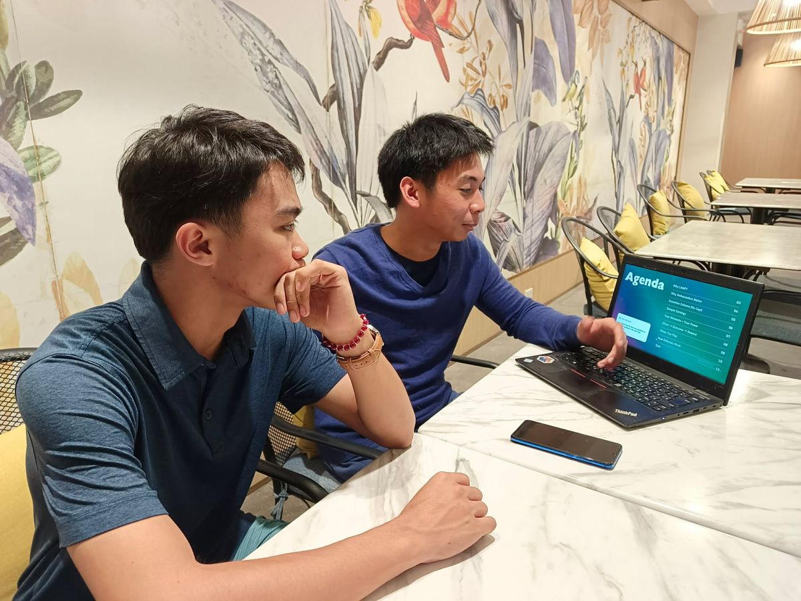
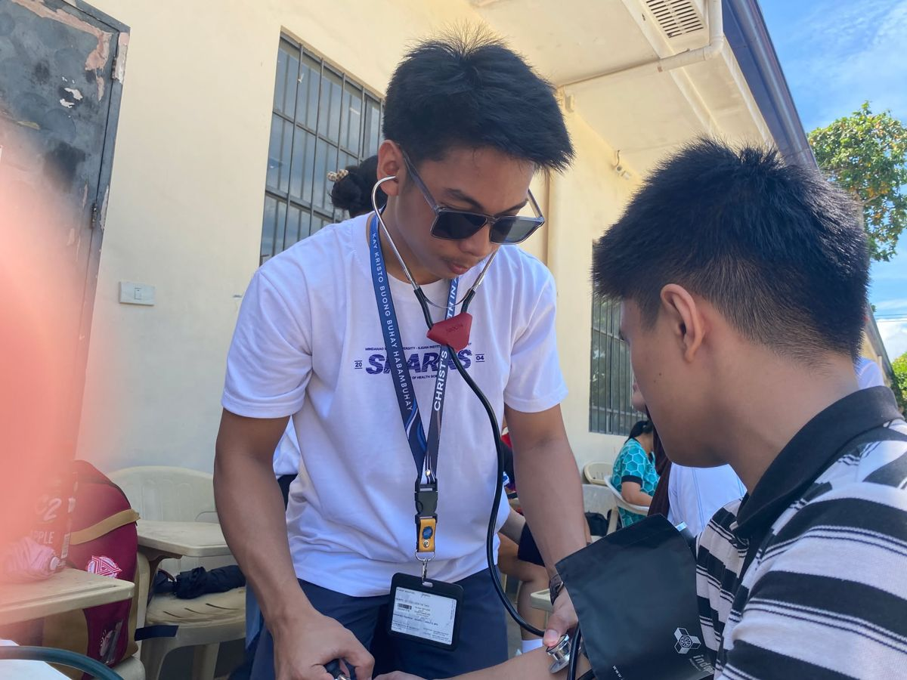

Hi, I am Jascha Isaac Pangandian.
I am a BS Nursing student at Mindanao State University - Iligan Institute of Technology (MSU-IIT) passionate about youth empowerment, STEM education, and essentialist leadership.
Stripping away the noise to build essential, high-impact solutions for youth and community growth.
About meView my resumeAt a glance
SchoolMSU-IIT, Iligan City
Course and yearBS Nursing, 3rd year
LeadingChairperson of CYA-Iligan and Founder of LAMP Online Review Program
Home baseAurora, Zamboanga del Sur
Snapshots

